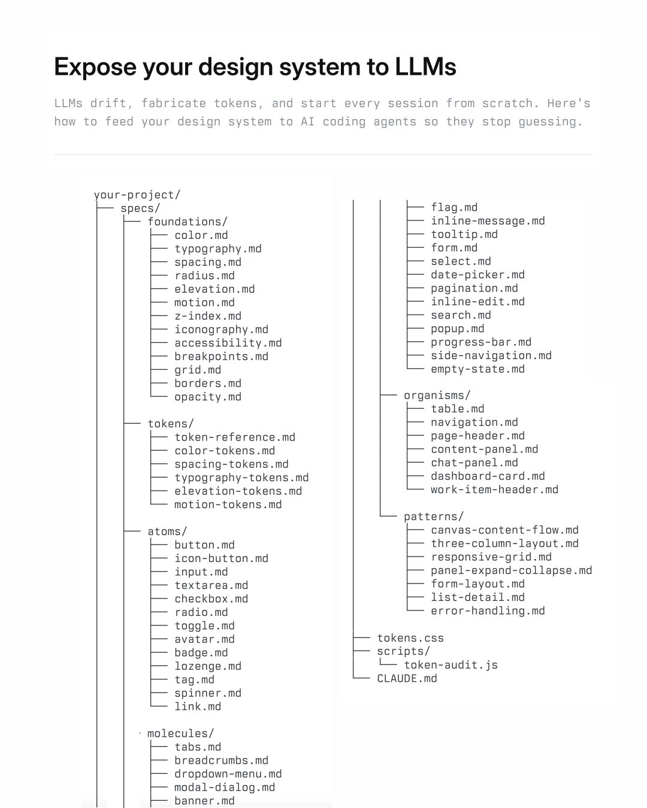
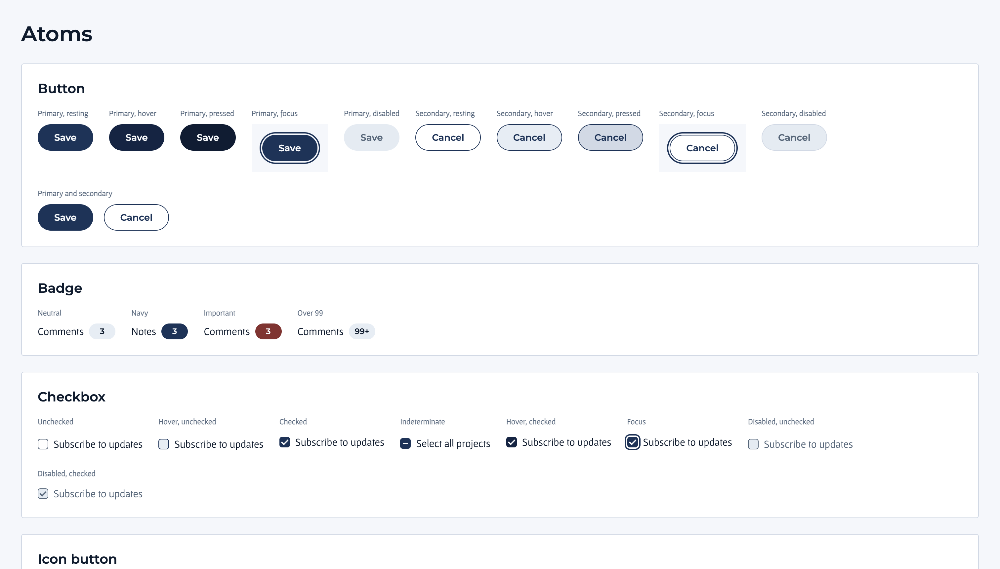
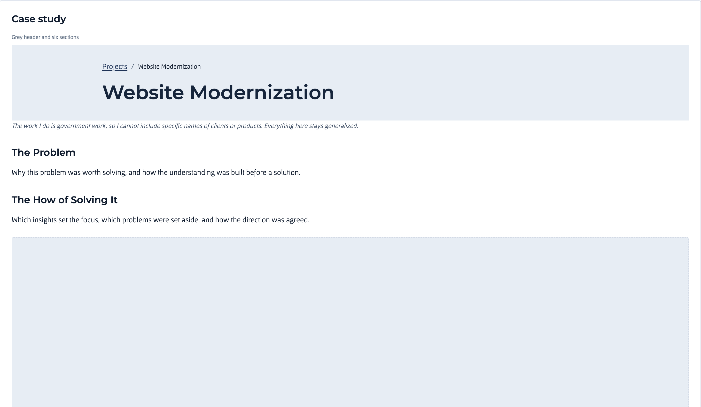

Responsive Design System
The Problem
While working on several projects with developers, I noticed that design handoffs were taking longer and the finished pages were not always consistent. Components needed repeated adjustments, especially when designs changed across multiple pages.
I had some experience with coding and web design, so I understood how much work it could take to keep everything aligned. I wanted to see whether a responsive design system could give developers and AI coding agents clearer rules to build from.
The How of Solving It
Before proposing the idea to a team, I wanted to test whether it would be useful.
I researched how to structure a design system for use with AI coding agents, then created a template and used it to build my portfolio website. This gave me a project where I could work through the setup, see what was missing, and make changes before applying the approach elsewhere.
Brainstorming
I used atomic design as a starting point and referenced component documentation from USWDS and Atlassian.
From previous experience with AI agents, I knew that leaving something unspecified often led to choices I had not intended. I wanted the system to clearly explain which components to use, how they should behave, and when they were appropriate.
I organized those rules into Markdown files and included examples. The main trade-off was the setup time: writing the documentation and defining components took work before the system could make page building easier.

Prototyping
As I edited the component files, I realized I needed a way to see the results without checking individual pages.
I created a components.html page that displayed the components, their states and variants, and short descriptions. It became a visual reference for checking what the agent had built against the documented rules.
I also added reusable patterns when the same layout appeared across pages. A hero section was one example. Defining it once meant I could reuse the structure instead of rebuilding it each time.

Testing and Iterating
I tested the system while building my portfolio. When a component needed repeated corrections, I reviewed whether its rules were specific enough or whether a reusable pattern was missing.
I also updated AGENTS.md with instructions to keep the documentation and component catalog current when components changed. That supported the workflow, although the output still needed review.
Once the foundation was in place, I could give the agent a low-fidelity wireframe, have it build with the existing components, and make adjustments from there.
I estimated that building my portfolio this way was about three times faster than previous portfolio builds. That was a personal estimate across different projects, rather than a controlled comparison.

Lessons Learned
I had mostly used AI for prototypes before this project. Working with developers helped me see that a prototype did not always provide the specifications needed to build a consistent interface.
The design system made those decisions more explicit. It gave the agent a defined set of components and gave me a visual reference for checking the result.
The biggest effort was establishing the foundation. After that, building additional pages required fewer repeated decisions. I later applied the approach to the reporting website project, where shared components helped the developer and me manage changes across multiple pages.